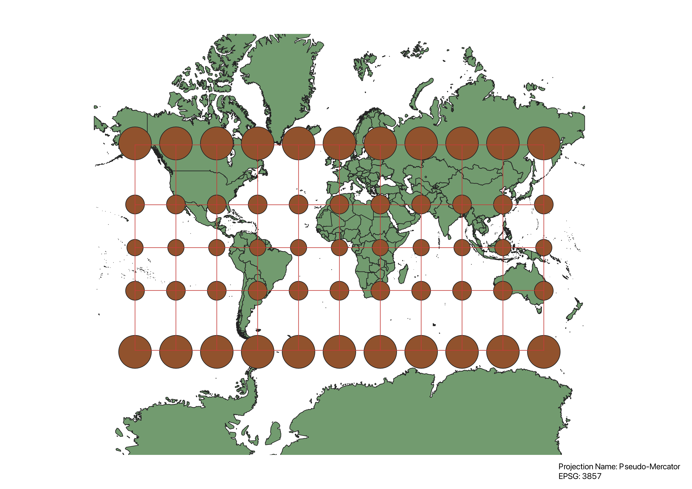
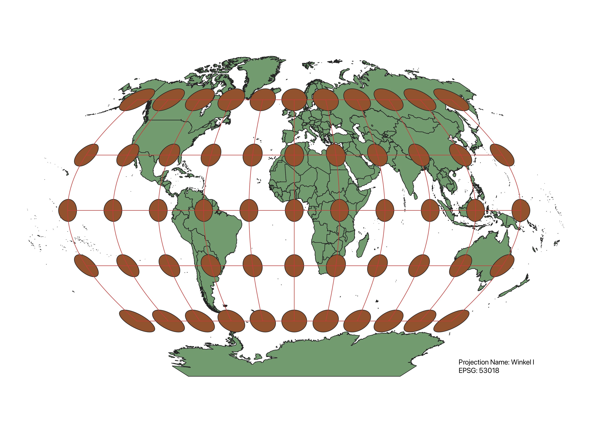
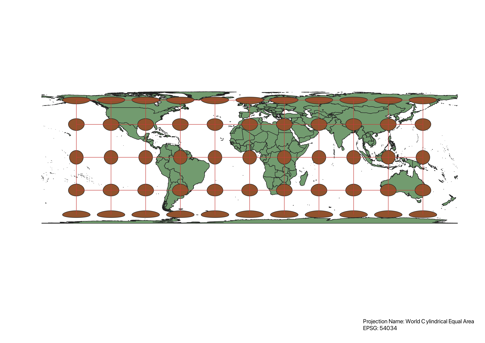
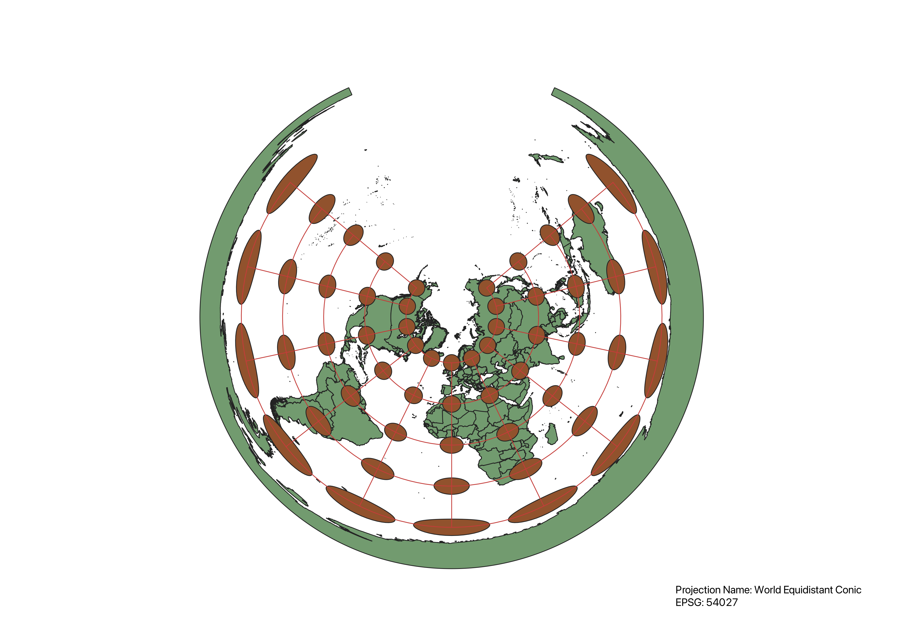
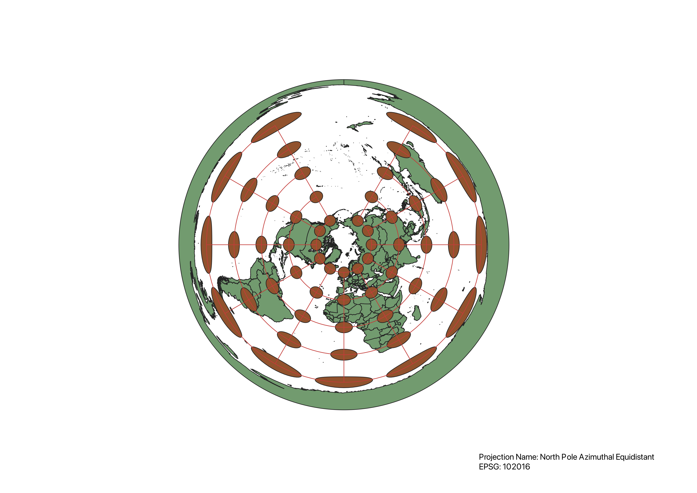
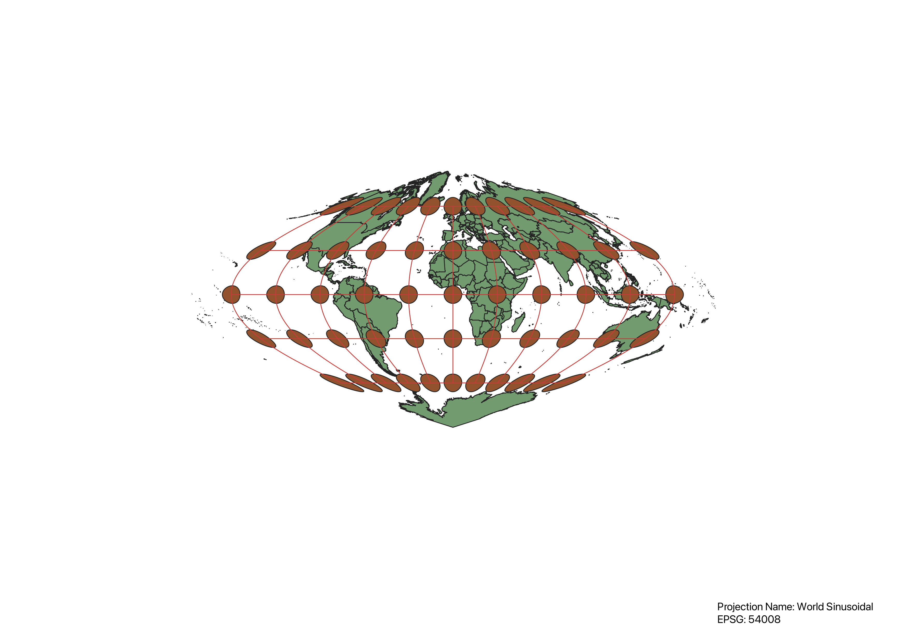
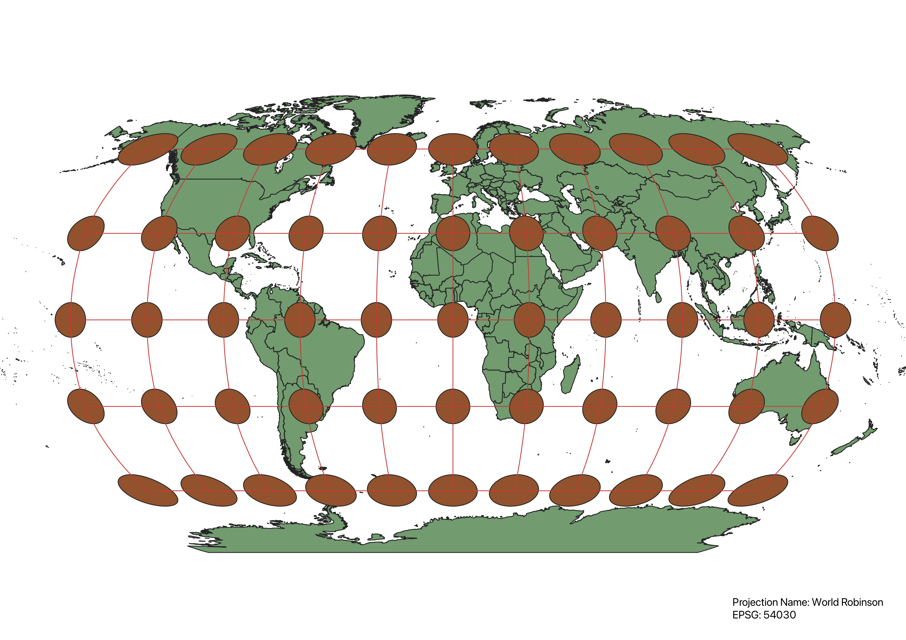

Homework 3
In this exercise, I learned how to display maps in different projections using QGIS.
To display this world map in different projections, I first uploaded the shapefile into QGIS. After that, I installed the Indicatrix mapper plugin by clicking the "manage and install plugins" button in the toolbar. Then I ran the plugin by using the button in the upper left hand corner, which provided the circles that show distortion on the map. To change the CRS, I searched for the EPSG number on the CRS tab of the project properties window and applied the one I wanted. Once I had the map, I created a new print layout where I labeled the map and saved it as a png to display on this site.
WGS 84 Projection
This rectangular projection retains the features of area and shape on the equator, but stretches moving North or South.

Aitoff Projection
This projection curves the map around what looks like part of a globe. The farther away from the prime meridian and equator, the more distorted and larger the countries are.

EPSG: 3857 - Pseudo-Mercator Projection
This rectangular projection maintains shape and direction, but area is distorted moving away from the equator going North or South.

EPSG: 53018 - Winkel I Projection
This projection is more ellipsoid-shaped, and strikes a balance between shape distortion and size distortion.

EPSG: 54034 Projection - World Cylindrical Equal Area
This map was made by wrapping a cylinder around the globe. The North and South of the globe are very stretched out, while the equator is the closest to being truly represented..

EPSG: 54027 - World Equidistant Conic Projection
This map was made by wrapping a cone around a portion of the globe. The parts of the map equivalent to the bottom of the cone are larger and misshapen than at the top of the cone.

EPSG: 102016 - North Pole Azimuthal Projection
This map was made by projecting part of the globe around a chosen point, here the north pole, to create a circular map. Farther away from the north pole, both shape and area are distorted.

EPSG: 54008 - World Sinusoidal Projection
This projection minimizes distortion at the equator, but the North and South of the map are strangely shaped and too large.

EPSG: 54030 - World Robinson Projection
This map compromises between shape and area distortion, and gets more distorted away from both the equator and the prime meridian.

Data used for this project
Download Natural Earth 1:10m Cultural Vector